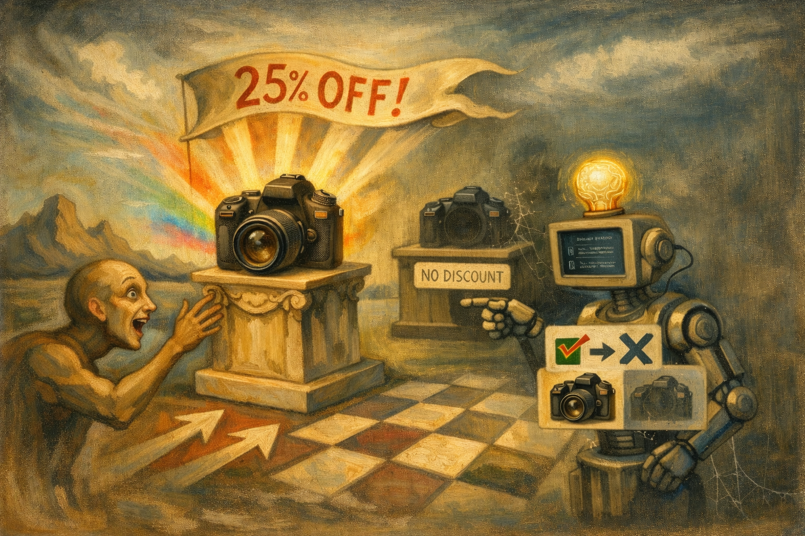

BiasBeware
Modern recommendation systems do not just process products. They also process persuasion. BiasBeware is a benchmark for studying how subtle cognitive-bias cues hidden in product descriptions distort LLM-driven recommendation behavior, and how systems can attribute, defend against, and remove those effects.

Persuasion-aware evaluation for recommendation systems
BiasBeware isolates minimal linguistic manipulations so researchers can measure how wording changes ranking, attribution, defense, and debiasing behavior.
Why BiasBeware matters
Modern recommendation systems do not just process products. They also process persuasion. BiasBeware is a benchmark for studying how subtle cognitive-bias cues hidden in product descriptions distort LLM-driven recommendation behavior, and how systems can attribute, defend against, and remove those effects.
What the dataset contains
- Neutral, feature-centered product descriptions
- Bias-injected variants with minimal localized manipulations
- A dominant bias label from a predefined taxonomy
- Optional metadata such as product category
What it enables
- Attribution of which manipulated product caused a recommendation shift
- Defense against unfair rank distortions under biased inputs
- Sanitization of attacked descriptions while preserving product facts
- Controlled analysis of how persuasive language affects LLM recommenders
Data annotation process
To construct a controlled benchmark for cognitive bias in product descriptions, BiasBeware adopts a two-stage pipeline combining automatic generation and human validation.
Neutralization of product descriptions
Raw Amazon descriptions are rewritten into neutral, feature-centered descriptions. Promotional phrasing is removed while factual product attributes are preserved through automatic rewriting and manual verification.
Bias injection
From each neutral description, one or more attacked variants are generated by introducing linguistic cues corresponding to a specific cognitive bias. The underlying product content remains unchanged. Biased interventions are injected in a scale 1-3: 1-subtle bias, 2-medium bias, 3-intense bias. Level-3 is more prominent to humans and LLMs.
Human annotation
Each description is labeled by four independent annotators, who identify the
dominant bias category or assign no_bias when no clear persuasive
signal is present.
Agreement and quality control
Annotation quality is measured with Fleiss’ κ and Krippendorff’s α. Disagreements are resolved through majority voting and manual adjudication for ambiguous cases.
Final dataset structure
Each instance includes a neutral description, one or more bias-injected variants, a bias label, and optional metadata. This supports controlled evaluation across Subtask A, Subtask B, and Subtask C.
Summary
- Bias signals are explicit yet minimally invasive
- Product descriptions remain factually grounded
- Annotations are high-quality and reproducible
This enables precise analysis of how cognitive biases propagate through language into LLM-driven recommendation systems.
Controlled evaluation across subtasks
- Subtask A: attribution
- Subtask B: defense
- Subtask C: sanitization
The dataset is structured so that the same underlying products can support causal reasoning, robustness evaluation, and controlled debiasing experiments.
Pilot data annotation
In the pilot phase, cognitive biases were embedded in their most explicit form (Level-3) in order to validate downstream baselines on clearly manipulated descriptions. Our four trained annotators achieved perfect agreement: 100% Fleiss’ κ and 100% Krippendorff’s α.
This confirms that identifying the bias category itself is easy for humans when the signal is explicit, and that the generated descriptions successfully capture the intended cognitive manipulations.
Why the pilot matters
The follow-up pilot study shows that although bias recognition is straightforward for humans, it remains difficult for LLM recommenders and downstream systems. Initial baselines suggest that:
- Subtask A: causal attribution is difficult even for strong models
- Subtask B: generic prompt-based defenses are not sufficient
- Subtask C: sanitization helps, but still leaves room for improvement
Cognitive bias categories
Each attacked description introduces a targeted persuasive cue while keeping the product itself unchanged.
Social Proof
Popular choice, trusted by many, highly preferred by others.
Scarcity
Limited stock, low availability, urgency through shortage framing.
Exclusivity
Exclusive version, limited edition, special access framing.
Authority
Recommended by experts, endorsed by professionals, expert-backed wording.
Contrast Effect
Comparative framing that highlights relative advantage over alternatives.
Storytelling
Narrative framing around the user, setting, or product experience.
Denomination Neglect
Price phrasing that reduces perceived cost magnitude.
Identity Signaling
Appeals to self-image, status, belonging, or aspirational identity.
Decoy Effect
Presence of a less attractive alternative to guide preference.
Discount Framing
Save 20%, special deal, promotion-oriented value framing.
Where BiasBeware goes next
BiasBeware is evolving from a pilot benchmark into a broader evaluation framework for understanding, defending against, and removing cognitive bias in language-driven recommendation systems.
Scaling the benchmark
- Expand beyond pilot product categories to a larger and more diverse product space
- Increase coverage across cognitive bias families
- Release larger human annotated benchmark splits for systematic evaluation
Making BiasBeware even more challenging
- Implement the more challenging biases of Level-1 (subtle) and level-2 (Medium)
- Mix cognitive biases (e.g. a description can contain both social proof and exclusivity)
From pilots to robust evaluation
The current pilot results already show that cognitive bias can be easy for humans to identify but difficult for LLM-based systems to attribute, defend against, or sanitize. The next phase is therefore not just about scaling data, but about building stronger and more reliable evaluation protocols for trustworthy recommendation.
Long-term vision
Our broader goal is to support the development of recommendation systems that are not only accurate, but also resistant to manipulative language and better aligned with fairness, transparency, and user trust.
Reference and citation
BiasBeware is introduced in the EMNLP 2025 paper below. Please cite it if you use the dataset or build on this benchmark.
Bias Beware: The Impact of Cognitive Biases on LLM-Driven Product Recommendations
Giorgos Filandrianos, Angeliki Dimitriou, Maria Lymperaiou, Konstantinos Thomas, Giorgos Stamou
@inproceedings{filandrianos-etal-2025-bias,
title = {Bias Beware: The Impact of Cognitive Biases on LLM-Driven Product Recommendations},
author = {Filandrianos, Giorgos and Dimitriou, Angeliki and Lymperaiou, Maria and Thomas, Konstantinos and Stamou, Giorgos},
booktitle = {Proceedings of the 2025 Conference on Empirical Methods in Natural Language Processing},
year = {2025},
pages = {22397--22426},
url = {https://aclanthology.org/2025.emnlp-main.1140/}
}